Lección 1: qué son los sesgos que se cuelan en un proceso de selección, por qué importan al negocio, y qué exige la normativa mexicana vigente.
Referencia rápida para releer sin tener que volver a ver el vídeo entero. El desarrollo completo, con ejemplos, está en los 3:41 minutos de arriba.
Puede estar influida por sesgos en procesos de selección sin estructura.
Los tres patrones que más se repiten al entrevistar o revisar currículums.
Las cuatro etapas donde el sesgo puede colarse.
Con mayor diversidad de género directiva (McKinsey, 2020).
Valorar experiencia antes de ver nombre o foto — no sustituye la entrevista.
4 requisitos obligatorios — los ves en detalle en el checklist descargable, más abajo.
El puesto es el mismo. Quién se anima a postularse, cambia por completo.
"Buscamos un ingeniero con carácter fuerte para liderar el equipo."
Seis frases inspiradas en convocatorias reales. Para cada una, decide si contiene un sesgo (lenguaje de género innecesario, edadismo, estereotipos) o si es una redacción neutra y aceptable — incluso si es genérica. Verás la explicación al instante.
Cuatro preguntas para repasar lo esencial de esta lección.
Secretaría de Economía, Secretaría del Trabajo y Previsión Social, Instituto Nacional de las Mujeres, & Consejo Nacional para Prevenir la Discriminación. (2015). NMX-R-025-SCFI-2015 en Igualdad Laboral y No Discriminación.
Norma Mexicana de certificación voluntaria, vigencia nacional.
Dixon-Fyle, S., Dolan, K., Hunt, V., & Prince, S. (2020). Diversity Wins: How Inclusion Matters. McKinsey & Company.
Cifra citada: cuartil superior de diversidad, 25% más de probabilidad de rentabilidad superior al promedio del sector.